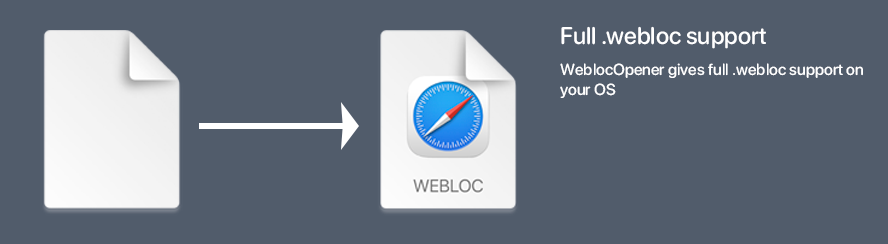

Introduction:
WeblocOpener is a simple way to open, edit, create MacOS Safari .webloc files on Windows.
What is .webloc file?

.webloc extension is usually means that in front of you is a MacOS Safari web-url.
Actually it is a text document, formatted to property list — PLIST 1.0
(see).
You can open it with any text-editor (like notepad on Windows) to find out the url, saved in
.webloc file.
But if you need to open a big number of files or open them often — using text-editor wouldn't be the fastest and
the easiest solution.
So that's why I want to offer you — WeblocOpener.
Features
What can do WeblocOpener on Windows?
-
WeblocOpener gives full MacOs
.weblocfiles support on Windows.  -
Open
.weblocfiles.
-
Choose not default browser to open URL. Open in browser from preset or use custom.
Browsers in preset:
and more... or you can use your custom browser.
You can use any custom browser by your own with custom call, using syntax:<file_path> %site.
-
Create new
.weblocfiles. Created files are fully supported by Safari on MacOS and WeblocOpener on Windows.
-
Edit created files. Unlike
.weblocfiles on MacOS that can not be edited by default (except for text editors), WeblocOpener provides the ability to edit.weblocfiles on Windows.
-
Auto-paste URL from clipboard when you created a new file. When you've just created an empty
file,
WeblocOpener helps you to paste copied URL into ULR-field. It automatically finds an URL in your
clipboard.

-
Generate QR-Code from
.webloccontext menu. Just make a right-click on a.weblocfile and select "Generate QR-Code". You can simply use it to open the link directly on your phone! -
Copy link from
.weblocfile using context menu. Make a right-click on a.weblocfile and select "Copy to clipboard". And you can send it to your friend without opening file! -
Auto-update tool will help you receive new updates just from the server. You should not check,
if
there is an update, WeblocOpener updater will notify you if there is a new version of the app.

- Find out, what's new in new update. Use info icon on Updater to check it out.
- Supported languages: EN IT RU DE FR
WeblocOpener for Windows is a simple application, that
will help you to open Safari .webloc links
on Windows.
WeblocOpener provides full support for this system, including: open, edit, create .webloc
files.
WeblocOpener provides ability to work with .webloc like on MacOS, even better.
Linux is coming... or not?
Hello! I think you have noticed that version for UNIX doesn't release for a long time, so I want to share with you some thoughts about this.
I got some troubles with auto-update tool on Unix systems, because the power of my laptop doesn't give too enough performance to run and develop the same time on Windows and Ubuntu.
WeblocOpener for Linux was going to be supported by most UNIX systems. Capability would be tested on Ubuntu 16.04.2 LTS and Debian 8.7.1.
But the main app is working. Should I release Unix version without auto-update tool? Yes and no. First of all the availability of the application allows you to open webloc links on UNIX systems. But on other side if there are some mistakes and intruders will find how to use the application to the detriment of users (is it possible? :D) it would be not a pleasant thing. Auto-updater tool will help you to update your application in time, so the risk goes to minimum.
Now changed orientation to stability improvements. Now auto-update tool works more stable. Unfortunately I didn't make download continuing, is there any sense to improve it for 8mb-12mb update?
As for MacOS I still have some interesting ideas that I want to improve. Coming back to hackintosh make me fill excitement by two reasons:
- MacOS is my fave system
- Hackintosh doesn't work properly now on my old laptop.
So now I
can go in improvements on Windows, making new features or to go in development of Unix-oriented
systems.
In any reason I guess 100% I will develop version for MacOS with important abilities
that OS does not provide. [UPDATE] I found out that most features
that
were on MacOS unavailable - now are realised in new versions of MacOS and browsers.
I'll research this issue and if there would be something more I can do except editing of
.webloc
files, maybe I will release WeblocOpener for MacOS.
As for Unix - there is a question: should I develop it at all? At least
auto-updater
tool and full
support?
Stay tuned. Subscribe on telegram WeblocOpener channel. Feedback about the application directly to me in telegram: @bench_doos
in development...
System Requirements
| Type | Requirements |
|---|---|
| Operating system | Windows XP (SP3), Vista, 7, 8, 10 |
| CPU | Pentium 2 266MHz or better |
| Memory | 128 MB RAM |
| Hard drive | 25 MB free hard disk space |
| Additional software | Java 8 required - Download |
Supported features
| Feature | |||
|---|---|---|---|
| Open | |||
| Edit | |||
| Create new | |||
| Generate QR-Code | |||
| URL auto-paste | |||
| Instant URL copy | |||
| Auto-update | |||
| Open in not default browser |